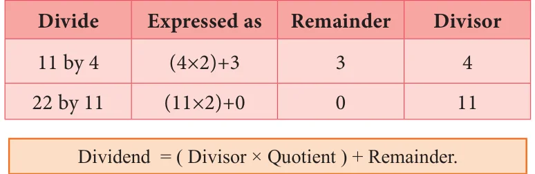
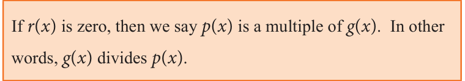
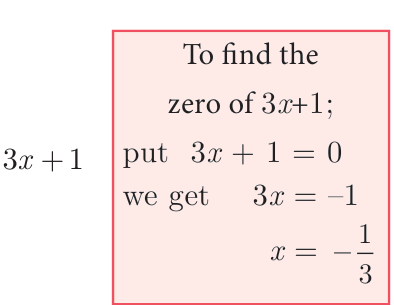
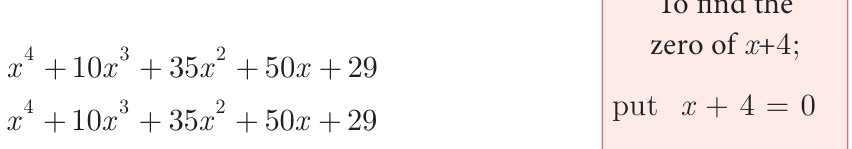

Let us consider the numbers 13 and 5. When 13 is divided by 5 what is the quotient and remainder.? Yes, of course, the quotient is 2 and the remainder is 3. We write \(13 = (5 \times 2)+3\) Let us try.

From the above examples, we observe that the remainder is less than the divisor.
3.6.1 Division Algorithm for Polynomials
Let p(x) and g(x) be two polynomials such that degree of p(x)> degree of g(x) and g(x) ! 0. Then there exists unique polynomials q(x) and r(x) such that
p(x) = g(x) # q(x) + r(x) … (1)
where r(x) \(= 0\) or degree of r(x) < degree of g(x).
The polynomial p(x) is the Dividend, g(x) is the Divisor, q(x) is the Quotient and
r(x) is the Remainder. Now (1) can be written as
Dividend = ( Divisor \(\times\) Quotient ) + Remainder.

If it looks complicated, don't worry! it is important to know how to divide
polynomials, and that comes easily with practice. The examples below will help you.

Divide \(x - 4x + 6x\) by x, where , x \(\neq\) 0
Solution
We have
\(- + = \frac{3}{x} - +\) , !

\(= - +\)
Find the quotient and the remainder when \((5x - 7x + 2)\) ' (x \(- 1)\)
Solution
\((5x - 7x + 2)\) ' (x \(- 1)\)
\(- 2 x - 1\)

- \(5xx = 5x\)
- \(5x(x - 1) = 5x - 5x\)
- \(- 2xx = - 2\)
- \(- 2(x - 1) =\) \(- 2x+2\)
\(\therefore\) Quotient \(= 5x - 2\) Remainder \(= 0\) Find quotient and the remainder when f(x) is divided by g(x)

f(x) \(= (8x - 6x +15x - 7)\), g(x) \(= 2x+1\). (ii) f(x) \(= x - 3x + 5x - 7\), g(x) \(= x + x + 1\)
Solution
- f(x) \(= (8x - 6x +15x - 7)\), g(x) \(= 2x+1\) (ii) f(x) \(= x - 3x + 5x - 7\), g(x) \(= x + x + 1\)
\(4x - 5x + 10 - 4 + 8\)
\(2x + 1 x + x + 1\)


Quotient \(= 4x^{2} - 5x + 10\) and Quotient \(= x^{2} - 4x + 8\) and \(\therefore\) Remainder \(= - 17 \therefore\) Remainder \(= - 4x - 15\)
3.6.2 Synthetic Division
Synthetic Division is a shortcut method of polynomial division. The advantage of synthetic division is that it allows one to calculate without writing variables, than long division.

Find the quotient and remainder when p(x) \(= (3x - 2x - 5 + 7x)\) is divided by d(x) \(= x + 3\) using synthetic division.
Solution
Step 1 Arrange dividend and the divisor in standard form.
\(3x - 2x + 7x - 5\) (standard form of dividend) \(x + 3\) (standard form of divisor)
Write the coefficients of dividend in the first row. Put '0' for missing term(s).
\(3 - 2 7 - 5\) (first row)
Step 2 Find out the zero of the divisor.
\(x + 3 = 0\) implies \(x = - 3\)
Step 3 Write the zero of divisor in front of dividend in the first row. Put '0' in the first column of second row.
\(- 3 3 - 2 7 - 5\) (first row)
0 (second row)
Step 4 Complete the second row and third row as shown below.
\(- 3 - 2 - 5\) (first row)

\(- 3 \times - 9 - 3 \times - 11 - 3 \times - 120\) (second row)
All the entries except the last one in the third row are the coefficients of the quotient.
Then quotient is \(3x - 11x + 40\) and remainder is -125.
Find the quotient and remainder when \(- -\) is divided by (3x+1) using synthetic division.

Solution
Let p(x) \(= 3x - 4x -5\), d(x) \(= (3x +1)\)
Standard form: p(x) \(= 3x - 4x + 0x - 5\) and d(x) \(= +\)
\(\frac{-1}{3} 3 - 4 0 - 5 0 - 1 \frac{5}{3} \frac{-5}{9}\)
\(3 - 5 \frac{5}{3} \frac{-50}{9}\) (remainder)
\(3x ^{3} - 4x^{2} -5 =\) x \(+ 133x^{2} - 5x +\) 53 - 509
\(3x ^{3} - 4x^{2} -5 = (3x3+1) \times 3x^{2} - 53 x +\) 59 - 509
\(= (3x\) +1)x \(- \frac{5550}{399} x +\) - (since, p(x) \(= d(x)q(x)+r\)
Hence the quotient is x \(- \frac{55}{39} x +\) and remainder is \(\frac{-50}{9}\)

If the quotient on dividing \(x + + + +\) by ( + )
is - ax \(+bx +\) , then find the value of a, b and also remainder.
Solution

Let p(x) \(= + + + +\) Standard form \(= + + + +\)
Coefficient are 1 10 35 50 29
\(- 4 1 0 - 4 - 24 - 44 - 24 1\) (remainder)
quotient \(x + 6x + +\) is compared with given quotient \(x -\) ax \(+bx +\)
coefficient of x is \(6 = - a\) and coefficient of x is \(11 = b\) Therefore, \(a = - 6\), \(b = 11\) and remainder= 5.

- Find the quotient and remainder of the following.
- \((4x^{3}+ 6x^{2} - 23x +18)\) ' (x+3) (ii) \((8y^{3} - 16y^{2} + 16y - 15)\) ' \((2y - 1)\)
- \((8x^{3} - 1)\) ' \((2x - 1)\) (iv) \(- 18z + 14z^{2} + 24z^{3}+18\) ' (3z+4)
- The area of a rectangle is \(x + 7x + 12\). If its breadth is (x+3), then find its length.
- The base of a parallelogram is (5x+4). Find its height, if the area is \(25x - 16\).
- The sum of (x+5) observations is (x +125). Find the mean of the observations.
- Find the quotient and remainder for the following using synthetic division:
- (x \(+ x - 7x - 3) \div\) (x \(- 3)\) (ii) (x \(+ 2x - x - 4) \div\) (x \(+ 2)\)
- \((8x - 2x + 6x + 5) \div (4x +1)\)
- If the quotient obtained on dividing \((8x - 2x + 6x - 7)\) by (2x +1) is
\((4x +\) px - qx \(+ 3)\), then find p, q and also the remainder.